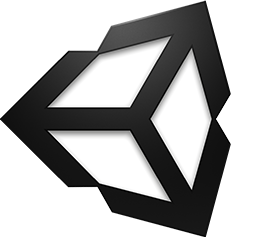

Daydreaming about Cardboards

- 🔧: headless CMS: contentful.com
- 🐦: @MarioBodemann
- 📄: bit.ly/mbvrberlin
- Please interrupt!
- Please follow the slides at the given address.
- Wait some seconds to see if someone is writing down the address...

Google Cardboard
- easy to produce
- available from different companies
- in different styles/interactions
- You just need a phone™

How does Cardboard work?
- use 3D data and movement to draw two images
- one for the left and right eye
- contains Lenses to move things away
- brain combines image to 3D scene

How do you program for it?
Googles SDK are available for
- Android (OpenGL)
- IOS (Objective C)
- Unity Engine (C# /JS) x (🍎, G,💻, 🐧)
What do those SDKs provide?
- lens distortion correction
- spatial audio
- head tracking
- 3D calibration
- side-by-side rendering
What else do they provide?
- stereo geometry configuration
- user input event handling
- see developer.google.com/vr/android/
How do I write a Unity App?
Prerequisites
- clone Googles github for unity https://github.com/googlevr/gvr-unity-sdk repsoitory
- install and open Unity


Let us add some more objects
- Add a sphere, capsule, cylinder.
- Move them arround


- Import the Unity package by going to Assets > Import Package > Custom Package.
- Apply Camera by going to Assets/GoogleVR/Prefabs and move the GvrViewerMain onto the camera.
- Play Scene. (Mention building it for Android and provide it later on)
What can I do in pure Android only?
- VrPanoramaView/VrVideoView
- integration of photospheres in view hierarchies
- integration with other (Java) libraries
- sending of Intents easily
Limitations of Android SDK
- using 3D models has to be done by
- either low level OpenGL or
- 3rd party 3d engine
Adding Photospheres to a simple project
- Open Android Studio.
- Open Simple Android List View project.
- Show current status in Vysor.
- Add three dependencies by hand: Common, CommonWidget, PanoWidget (Sources/Others/gvr-android-sdk/libraries)
- Use VrPanoramaView in xml, increasing the height of view.
- Use VrPanoramaView in java (adapter)
- Load image from resources. (VrPanoramaView.load, BitmapFactory.decoderesource)
- Introduced at Google I/O this year.
- Soon™ first hardware available.
New SDK features
- Controlling the controller
- orientation/acceleration
- clickpad (x,y, clicked)
- buttons (App, Vol+/-)
- spatial audio engine
Deprecation & Deletion
- deprecation of v1.0 Cardboards 😱
- magnets are uncool!
- deprecation of cardboard button infavor of controller
- renaming Cardboard* packages to Gvr*